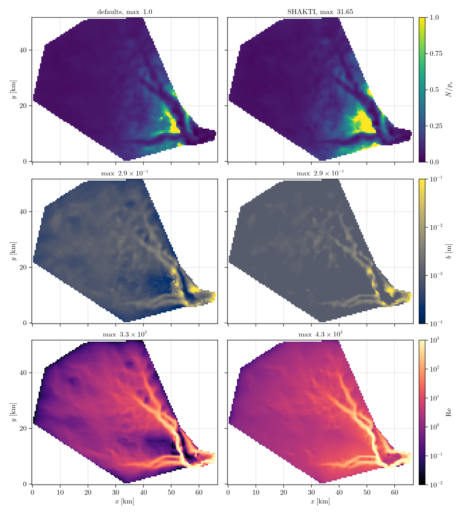

Helheim Glacier
The winter base state of Helheim Glacier, East Greenland, from the ISSM SHAKTI setup of (Sommers et al., 2023): their mesh, geometry, ice hardness and inverted friction coefficient, rasterized onto a 500 m grid. 90 days of 30-minute steps, with the defaults and with the original SHAKTI equations. The loader is load_helheim in docs/make_figures.jl, which also makes the figure; the input files are in docs/src/examples/input/Helheim.
- Mask: the mesh interior is
GROUNDED, the restOTHER_BASIN; boundary cells along the calving front (terminus13.exp) areOCEAN. A = B^{-3}from the mesh'srheology_B,Gfrom its geothermal flux, sliding speed from its initial velocity.- Sliding:
LinearSlidingLaw(τ_b = C² N u_b) with their invertedC. - Constants of their Table 2:
rho_i = 917,omega = 1e-3,br = 0,lr = 2,ct = 0,mdot_includes_sensible = false. - No surface input; the water comes from basal melt.
using Shakti
d = load_helheim() # (; xc, yc, DX, mask, H, zb, A, G, ub_x, ub_y, C)
Nx, Ny = size(d.H)
grid = Grid(Nx, Ny, (Nx - 1) * d.DX, (Ny - 1) * d.DX)
sl = LinearSlidingLaw(grid, d.C)
b = fill(1e-3, Nx, Ny)
p = ModelParameters(rho_i = 917.0, omega = 1e-3, br = 0.0, lr = 2.0, ct = 0.0, mdot_includes_sensible = false)
state = State(grid)
set_initial_conditions!(state, grid, p, sl, d.mask, d.A, d.zb, d.zb .+ d.H .+ b, b, d.G, d.ub_x, d.ub_y,
zeros(Nx, Ny), zeros(Nx + 1, Ny), zeros(Nx, Ny + 1))
ps = PicardSolver(500, 1e-6, CUDSSDirectSolver(grid; structure = :general), grid) # LUDirectSolver(grid) on CPU
sim = Simulation(grid, state, 4320, floattype(1800.0), p, ConstantMeltInput(), sl; ps = ps,
observer = IOObserver(["N", "b", "Re", "po"], [0, 4320], NetCDFFileWriter(), "helheim.nc"))
run!(sim)For the original equations, add b_min = 1e-3 to the parameters and cavity_filling = FilledCavities(), uplift = NoUplift(), hydraulic_potential = BedPotential(), gap_coupling = ExplicitGapCoupling() to Simulation.
| Run | Grid | Grounded | Steps | N/p_o | Mean N | Max b | Max Re |
|---|---|---|---|---|---|---|---|
| defaults | 134 x 104 | 8 199 | 4320 x 30 min | 0 to 1 | 0.74 MPa | 0.29 m | 3 300 |
| SHAKTI | 134 x 104 | 8 199 | 4320 x 30 min | -0.02 to 31.6 | 0.84 MPa | 0.29 m | 4 300 |
Wall times are on the Performance page.

- Both runs drain through the same channels in the trunk, with the same largest gap.
- The original equations keep the gap full of water. Where melt cannot fill it,
p_wgoes far below zero andN/p_oreaches 30. The defaults leave that gap partly empty withp_w = 0, soN ≤ p_oeverywhere, and the gap there closes below10^{-3}m instead of holding atb_min. - The defaults cost more: more than ten Picard iterations a step at the end against one for the original equations.